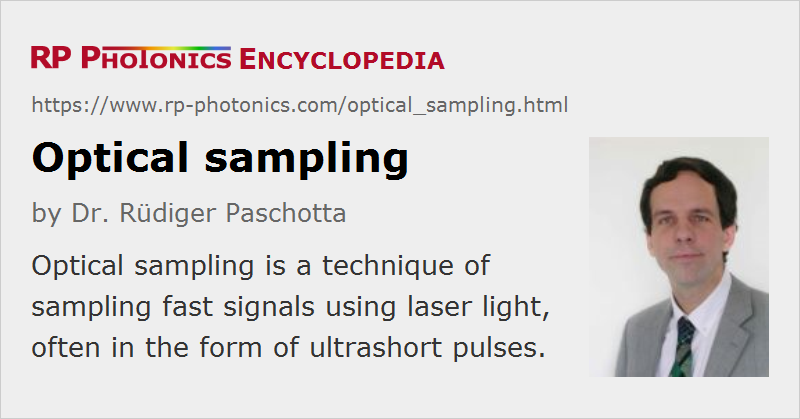

Optical Sampling
Definition: a technique of sampling signals using laser light, often in the form of ultrashort pulses
Alternative term: optoelectronic sampling
German: optische Abtastung, optisches Sampling
How to cite the article; suggest additional literature
Author: Dr. Rüdiger Paschotta
Optical sampling (also called optoelectronic sampling) refers to a class of techniques where optical signals (usually in the form of ultrashort pulses) are used to probe electrical signals. Sometimes, however, optical signals themselves are sampled.
Some basic principles, as used in different forms of optical sampling, are:
- The duration of a short light pulse limits the time in which the light interacts with the device under test (DUT), which may be a fast electronic circuit, and the effect of the interaction can consequently be monitored without the need for a very fast photodetector.
- An ultrashort optical pulse hitting a photoconductive switch can close an electrical connection for a very short time (sometimes below 1 ps). This can be used as a very fast gate (e.g. in a very fast analog-to-digital converter), or for generating an extremely short current or voltage pulse (which may be used as a test signal).
- Typical techniques for sampling of optical signals are based on some cross-correlation signal obtained via a nonlinear interaction, such as the Kerr effect in a nonlinear crystal or four-wave mixing in an optical fiber.
Particular techniques of optical sampling are:
- Electro-optic sampling exploits the linear electro-optic effect (also called Pockels effect) to obtain an interaction of light and DUT.
- Photoconductive sampling is based on closing an electric contact for a short time by illumination of a photoconductive medium with a short pulse.
- Fiber-based optical sampling [17] of optical signals (e.g. fast bit patterns in an optical fiber communications system) exploits the nonlinear interaction of some short sampling pulses with the probed waveform via fiber nonlinearities. A bandpass filter is used to isolate a nonlinear mixing product, which is subsequently detected with a photodetector.
In some cases, different techniques are used at the same time. It is possible e.g. to generate a high-bandwidth microwave signal with a photoconductive switch and analyze its effects by electro-optic sampling.
Applications
Some typical applications of optical sampling are:
- testing integrated electronic circuits (ICs) or of other fast electronics (e.g. microwave circuits) by measuring waveforms at various points on the chips [4, 5]
- measuring the temporal response (bandwidth) of fast photodetectors
- analog-to-digital conversion (A/D conversion) with sampling rates of tens of gigahertz [11], where fast photoconductive switches allow interleaved operation of multiple electronic A/D converters; applications in wideband radar, optical fiber communications, and ultrafast oscilloscopes
- characterizing trains of ultrashort pulses at extremely high pulse repetition rates, as occur e.g. in time-multiplexed optical fiber communications systems
- measuring waveforms of terahertz pulses [6]
- terahertz spectroscopy, e.g. measuring terahertz transmission spectra [7] by Fourier transformation of time-domain data (comparing spectra with and without an absorbing sample between terahertz emitter and detector)
- generating microwave or millimeter wave signals, e.g. bursts with arbitrary waveforms, with photoconductive switches
The main attractions of optical sampling are:
- the extremely high measurement bandwidth, which can easily exceed 1 THz (1000 GHz)
- the capability of doing measurements on arbitrary points of electronic circuits with minimal back action on the device under test (particularly with electro-optic sampling)
- the capability for full time domain characterization
Synchronous Versus Asynchronous Optical Sampling
When data are recorded in the time domain for different delay times, the delay time is often varied with an optical delay line, realized e.g. with a corner cube prism on a motorized translation stage. This approach, however, called synchronous sampling, limits the speed with which a range of delays can be realized, and consequently the speed with which whole transmission spectra or the alike can be recorded.
Much faster data acquisition is possible with asynchronous sampling, using two different mode-locked lasers with slightly different pulse repetition rates. This automatically provides a temporally varying delay between the two pulses. The difference in pulse repetition rates determines how many times per second the measurement interval – given by the inverse average repetition rate – is scanned. This effective scan rate, however, must be low enough to allow for a sufficient temporal resolution, which is then limited by the detection bandwidth (not by the pulse duration). A high pulse repetition rate helps, provided that it is low enough to allow for a sufficiently large temporal range.
As an example, asynchronous sampling with two 1-GHz mode-locked lasers is sufficient for recording terahertz transmission spectra with a 1-GHz frequency resolution, corresponding to a temporal range of 1 ns. A 10-kHz difference of repetition frequency means that 10 000 spectra per second can be recorded. This allows one either to record data for many samples per second (e.g. to obtain position-dependent transmission spectra or even two-dimensional transmission images), or to average many spectra of a single sample within a few seconds, lowering the detection noise to a very low level. Using fast detection electronics, it is possible to record thousands of transmission spectra, ranging from virtually zero to several terahertz, within 1 s.
The asynchronous sampling method can be applied in essentially the same way to other pump–probe measurements, e.g. to measure the recovery dynamics of semiconductor saturable absorber mirrors or similar structures.
An additional advantage of asynchronous sampling is that mechanical noise of the delay time and position-dependent mode sizes are avoided. On the other hand, all the advantages obviously come at the cost of requiring two lasers instead of one.
Suppliers
The RP Photonics Buyer's Guide contains 2 suppliers for optical sampling systems.
Questions and Comments from Users
Here you can submit questions and comments. As far as they get accepted by the author, they will appear above this paragraph together with the author’s answer. The author will decide on acceptance based on certain criteria. Essentially, the issue must be of sufficiently broad interest.
Please do not enter personal data here; we would otherwise delete it soon. (See also our privacy declaration.) If you wish to receive personal feedback or consultancy from the author, please contact him e.g. via e-mail.
By submitting the information, you give your consent to the potential publication of your inputs on our website according to our rules. (If you later retract your consent, we will delete those inputs.) As your inputs are first reviewed by the author, they may be published with some delay.
Bibliography
| [1] | M. A. Duguay and J. W. Hansen, “An ultrafast light gate”, Appl. Phys. Lett. 15, 192 (1969), doi:10.1063/1.1652962 |
| [2] | J. R. Andrews and R. A. Lawton, “Electrically strobed optical waveform sampling oscilloscope”, Rev. Sci. Instrum. 47 (3),311 (1976), doi:10.1063/1.1134611 |
| [3] | T. Kanada and D. L. Franzen, “Optical waveform measurement by optical sampling with a mode-locked laser diode”, Opt. Lett. 11 (1), 4 (1986), doi:10.1364/OL.11.000004 |
| [4] | J. Valdmanis and G. Mourou, “Subpicosecond electrooptic sampling: Principles and applications”, IEEE J. Quantum Electron. 22 (1), 69 (1986), doi:10.1109/JQE.1986.1072867 |
| [5] | K. J. Weingarten and D. M. Bloom, “Picosecond optical sampling of GaAs integrated circuits”, IEEE J. Quantum Electron. 24 (2), 198 (1988), doi:10.1109/3.115 |
| [6] | Ch. Fattinger and D. Grischkowsky, “Terahertz beams”, Appl. Phys. Lett. 54 (6), 490 (1989), doi:10.1063/1.100958 |
| [7] | D. Grischkowsky et al., “Far-infrared time-domain spectroscopy with terahertz beams of dielectrics and semiconductors”, J. Opt. Soc. Am. B 7 (10), 2006 (1990), doi:10.1364/JOSAB.7.002006 |
| [8] | C. H. Lee, “Picosecond optics and microwave technology”, IEEE Trans. Microwave Theory Technol. 38 (5), 596 (1990), doi:10.1109/22.54928 |
| [9] | K. S. Giboney et al., “Picosecond measurements by free-running electro-optic sampling”, IEEE Photon. Technol. Lett. 6 (11), 1353 (1994), doi:10.1109/68.334837 |
| [10] | A. Cutolo et al., “Selected contactless optoelectronic measurements for electronic applications”, Rev. Sci. Instrum. 69 (2), 337 (1998), doi:10.1063/1.1148752 |
| [11] | P. W. Juodawlkis et al., “Optically sampled analog-to-digital converters”, IEEE Trans. Microwave Theory Technol. 49 (10), 1840 (2001), doi:10.1109/22.954797 |
| [12] | L. Y. Nathawad, “A 40-GHz-bandwidth, 4-bit, time-interleaved A/D converter using photoconductive sampling”, IEEE J. Solid-State Circuits 38 (1), 2021 (2003), doi:10.1109/JSSC.2003.819172 |
| [13] | C. Dorrer et al., “Linear optical sampling”, IEEE Photon. Technol. Lett. 15 (12), 1746 (2003), doi:10.1109/LPT.2003.819729 |
| [14] | Y. Han and B. Jalali, “Photonic time-stretched analog-to-digital converter: fundamental concepts and practical considerations”, IEEE J. Lightwave Technol. 21 (12), 3085 (2003), doi:10.1109/JLT.2003.821731 |
| [15] | C. Schmidt-Langhorst and H.-G. Weber, “Optical sampling techniques”, J. Opt. Fiber Commun. Rep. 2, 86–114 (2005), doi:10.1007/s10297-005-0034-4 |
| [16] | P. Gaal et al., “Measuring optical frequencies in the 0–40 THz range with non-synchronized electro-optic sampling”, Nature Photon. 1, 577 (2007), doi:10.1038/nphoton.2007.170 |
| [17] | P. A. Andrekson and M. Westlund, “Nonlinear optical fiber based high resolution all-optical waveform sampling”, Laser Photon. Rev. 1 (3), 231 (2007), doi:10.1002/lpor.200710014 |
See also: electro-optic sampling, photoconductive sampling, pump–probe measurements, terahertz radiation, laser applications
and other articles in the category methods
|  |
If you like this page, please share the link with your friends and colleagues, e.g. via social media:
These sharing buttons are implemented in a privacy-friendly way!